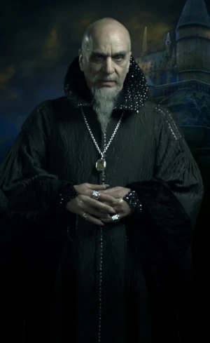
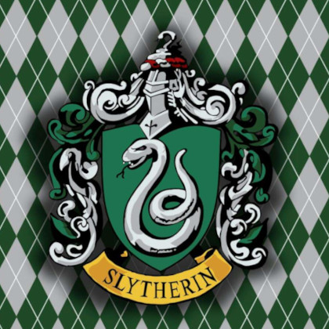
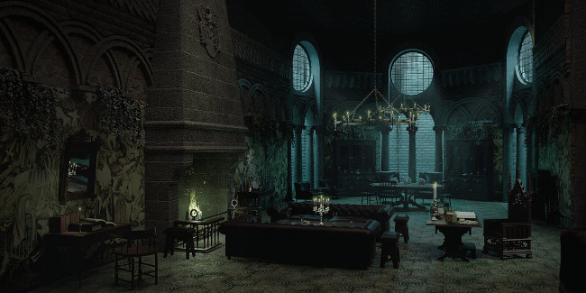

Quem fundou a casa da Sonserina ?

Salazar Slytherin foi um bruxo sangue puro, conhecido por sua astúcia e determinação, nascido por volta de 976 e um dos quatro fundadores da Escola de Magia e Bruxaria de Hogwarts, sendo reconhecido por sua astúcia e determinação. Ele foi considerado um dos maiores bruxos da época, respectivamente como Ofidioglota e um habilidoso Legilimente.
Segundo a descrição do Chapéu Seletor, ele era ambicioso e veio de um pântano. Essa pode ser a razão pela qual ele e sua família tem o raro dom de falar com as cobras. Também se diz que qualquer um que fale com as cobras é aparentado com Salazar Slytherin. Os pãntanos do leste da Inglaterra estão em Norfolk, Lincolnshire, Cambridgeshire, e nos condados adjacentes, embora não se sabe se Slytherin veio mesmo dessa região em particular.
Era reconhecido como um dos melhores amigos de Godric Gryffindor, até que seus ideais a respeito de aceitar apenas alunos puro-sangue foram de encontro com os outros fundadores, de modo que ele deixou a escola, mas não antes de criar uma câmara secret. De acordo com a antiga lenda contada pelo professor de História da Magia, Cuthbert Binns, Salazar Slytherin além de criar a Câmara Secreta nas masmorras de Hogwarts, o mesmo escondeu um basilisco para que pudesse limpar a escola de todos aqueles que não tinham sangue "puro".
Ele era extremamente talentoso e astucioso, com grandes habilidades em Legilimência - a habilidade de "ler" mentes -, além de ser um dos primeiros ofidioglotas de que se tem notícia.
Ele preferia ensinar aos alunos mais ambiciosos, e os membros de sua Casa acabavam em geral, sendo os mais poderosos bruxos e bruxas.
Salazar Slytherin morreu em algum momento perto do século XI.
Algumas curiosidades interessantes da casa.
Símbolo da Sonserina.
A Sonserina é representada por uma grande cobra, o que faz todo sentido se lembrarmos que o fundador da casa criou um Basilisco na Câmara Secreta. Além disso, vem de uma tradição frequente dos membros da casa, como seu fundador e Tom Riddle, a ofidioglossia, ou seja, a habilidade de se comunicar com cobras.
As cores da casa são verde e prateado, e isso tem a ver com o fato dela representar o elemento da água, seja dos rios e lagos onde vivem as cobras ou dos dias chuvosos.

O medalhão de Salazar Slytherin.
O Objeto de Valor de Salazar era seu famoso medalhão, que chegou a passar de geração em geração para os descendentes de bruxo, até chegar nas mãos de Marvolo Gaunt. Sua filha, Mérope, roubou o medalhão e o vendeu para um contrabandista, e desde então, o objeto circulava no mundo bruxo, até ser encontrado pelo filho de Mérope, Tom Riddle - também conhecido como Lord Voldemort.
Voldemort, em sua busca por poder, resolveu transformar os objetos pertencentes aos fundadores de Hogwarts em horcruxes - receptáculos para pedaços de sua alma - e só não obteve sucesso com a Espada de Grifinória. O Medalhão de Sonserina foi usado pelo bruxo, e só viria a ser destruído anos depois, pelas mãos de Rony Weasley, graças à Espada de Grifinória.

Sala comunal.
A Sala Comunal e os dormitórios da Sonserina são localizados nas masmorras do castelo de Hogwarts, logo abaixo do Lago Negro. Por causa de sua localização, a luz nos cômodos é verde e a temperatura sempre está fria.
Harry e Rony já entraram na Sala Comunal da Sonserina, disfarçados como Crabbe e Goyle. Para entrar, basta murmurar uma senha na frente de uma parede úmida.

O fantasma da casa.
O fantasma da Sonserina é o Barão Sangrento. Ele se apaixonara por Helena Ravenclaw, a filha da fundadora da Corvinal, e foi incumbido da missão de resgatá-la na Albânia. Quando Helena recusou voltar com ele, o Barão teve um ataque de raiva e a assassinou. Percebendo o que fizera, ele se matou ali mesmo, coberto com o sangue de sua amada.